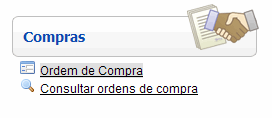
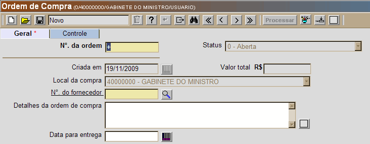
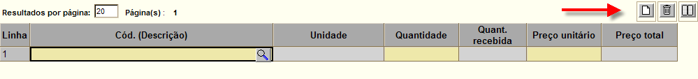

Ordem de Compra [ Voltar ]Para criar uma ordem de compra, os usuários autorizados devem clicar no formulário "Ordem de Compra", que se encontra dentro do menu "Compras". 
A seguinte tela será exibida pelo sistema: 
Para criar uma ordem de compra, siga os passos abaixo:
 [Salvar]
para salvar a ordem no sistema. Assim que o
registro é salvo,
as linhas da ordem se tornam passíveis de edição. [Salvar]
para salvar a ordem no sistema. Assim que o
registro é salvo,
as linhas da ordem se tornam passíveis de edição.3º Passo: selecione os produtos que deseja incluir na ordem e informe as respectivas quantidades e preços unitário. Clique no botão  [Procurar] à direita do campo "Cód.
(Descrição)"
para visualizar uma lista contendo todos produtos cadastrados. Clique
no produto desejado para selecioná-lo. Utilize os botões [Novo] e
[Procurar] à direita do campo "Cód.
(Descrição)"
para visualizar uma lista contendo todos produtos cadastrados. Clique
no produto desejado para selecioná-lo. Utilize os botões [Novo] e  [Excluir] localizados na
grade (ver
imagem abaixo) para adicionar ou excluir produtos. [Excluir] localizados na
grade (ver
imagem abaixo) para adicionar ou excluir produtos.
4º Passo: clique no botão  [Salvar] para registrar os
dados da ordem no sistema. [Salvar] para registrar os
dados da ordem no sistema.5° Passo: após certificar-se de que todos os dados da ordem de compra estão corretos, clique no botão . Uma vez processada, o ordem de compra não mais poderá ser editada. |